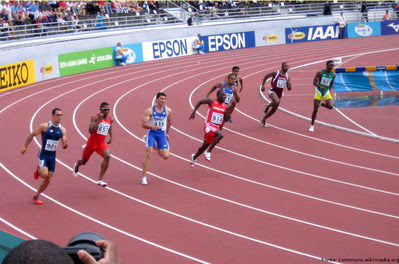
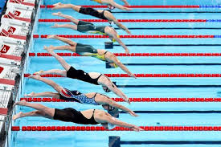
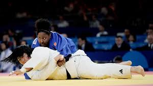
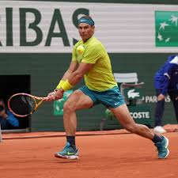

O atletismo é uma das modalidades mais tradicionais das Olimpíadas, abrangendo provas como corridas, saltos e lançamentos. É um verdadeiro teste de velocidade, força e resistência, com destaque para a maratona e os 100 metros rasos, que frequentemente atraem grande atenção.
O vôlei, tanto na versão de quadra quanto de praia, é um esporte dinâmico e emocionante. No vôlei de quadra, equipes de seis jogadores tentam vencer pontos com uma combinação de ataque e defesa. Já no vôlei de praia, duas duplas disputam em uma arena ao ar livre, exigindo grande habilidade técnica e resistência.

A natação é uma competição que combina velocidade e técnica em diversos estilos, como livre, costas, peito e borboleta. As provas variam em distância, desde sprints até longas distâncias, e os nadadores competem em piscina ou em águas abertas, como no mar.
O judô é uma arte marcial que se destaca por suas técnicas de arremesso e imobilização. Em competições olímpicas, atletas buscam vencer por ippon, que é o equivalente a um nocaute, ou por punições aos adversários. O judô valoriza a técnica e a estratégia, sendo muito respeitado pela filosofia que o acompanha.
O tênis nas Olimpíadas traz um misto de habilidade e resistência, com partidas que podem se estender por várias horas. Tanto no masculino quanto no feminino, os jogadores competem em simples e duplas, buscando dominar a quadra com precisão e força. O torneio olímpico é uma oportunidade para os tenistas mostrarem seu talento em um cenário internacional de prestígio.
